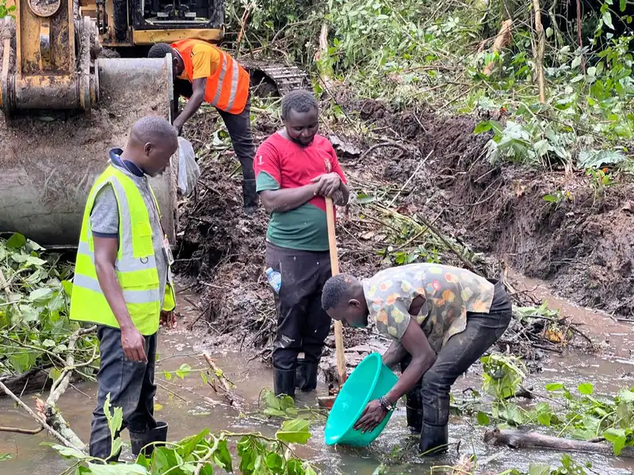

Le rift du Kivu et la géologie des Virunga
L'est de la RDC se situe sur la branche occidentale (albertine) de la vallée du Rift est-africain. Autour
de Goma et Bukavu, le terrain est formé de volcanites alcalines récentes de la chaîne des Virunga, de
sédiments de rift interstratifiés et d'un socle profondément altéré — un environnement complexe et
variable où une véritable investigation de sous-sol est indispensable avant travaux miniers, de barrage
ou d'infrastructure. Plus au nord, l'Ituri repose sur un socle archéen et des ceintures de roches
vertes qui hébergent d'importantes minéralisations en or et en pegmatites.
GeoResolve combine la géophysique non invasive et le forage ciblé pour réduire les risques et les coûts.
Pour les mines, nous déployons magnétique, EM, IP et ERT pour localiser et prioriser les cibles ; pour
les infrastructures et barrages, nous utilisons sismique de réfraction, MASW et ERT pour cartographier
fondations, pentes et eaux souterraines ; et pour les communautés, nous positionnons les forages par
VES/ERT.

Projets sélectionnés en RDC
Exploration alluvionnaire de l'or — Ituri (2026)
GeoResolve a exécuté l'exploration alluvionnaire de l'or en Ituri, combinant géophysique et tranchées/pitting
pour délimiter les chenaux prospectifs et appuyer les décisions d'évaluation des ressources dans un
terrain difficile et isolé.
Exploration des pegmatites et métaux de base
Levés magnétiques et de résistivité sur les corridors de pegmatites pour cibler les minéralisations
d'étain, tantale, tungstène et lithium typiques du couloir Kivu–Ituri.

Questions fréquentes
Quelles zones de la RDC couvrez-vous ?
Nous ciblons l'est de la RDC — Goma, Bukavu et le corridor de l'Ituri — et pouvons mobiliser pour les
projets miniers, hydroélectriques, d'infrastructures et d'eaux souterraines dans toute la région du rift
du Kivu.
Quelles méthodes géophysiques utilisez-vous en RDC ?
Sismique de réfraction et MASW, tomographie de résistivité électrique (ERT), levés magnétiques et EM/IP,
GPR et forage avec SPT — combinés pour bâtir un modèle de sous-sol robuste sur tout site.
Accompagnez-vous l'exploration de l'or et des minéraux en Ituri ?
Oui. Nous avons réalisé l'exploration alluvionnaire de l'or en Ituri en combinant géophysique et
tranchées/pitting, et nous soutenons l'exploration des pegmatites et des métaux de base par magnétique,
EM et résistivité.
Pouvez-vous accompagner les barrages et infrastructures près de Goma ou Bukavu ?
Oui. Nous caractérisons les axes et fondations de barrages, les pentes et les couloirs d'accès par
sismique, ERT et forage, et évaluons les terrains volcaniques et de rift autour des lacs du Kivu.
Livrez-vous les rapports en français ?
Oui. Notre équipe est-africaine travaille en français et en anglais, et nous pouvons livrer sections
interprétées, modèles 2D/3D et rapports complets en français pour les clients de RDC.